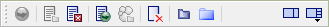

Project Pane Toolbar
When the Project pane is active, the toolbar appears as below.

| Icon | Command | Description/Comment |
|---|---|---|
 |
Execute/Stop toggle | Execute or stop cycling; see the “Toolbar” topic for more information. |
| Open in Editor | Open the currently selected input (data, FISH, etc.) file. | |
| Close | Close the currently selected input (data, FISH, etc.) file. | |
| Call | Open the currently selected file in the Editor pane (if it is not already open) and execute its commands. | |
| Restore | Activate the currently selected results (SAV) file. | |
 |
Remove from Project | Remove the selected file from the project, which will permanently sever the connection between the file and the project. The command will also close the selected item if it is currently open in the program. |
| Show in Windows Explorer | Show (navigate to) the selected file in Windows Explorer (note this will open a new Windows Explorer window, whether or not there is an instance of the program already open). | |
 |
Show/Hide Control Panel | Toggle display of the Control Panel. |
 |
Show/Hide Control Sets | This button is a pull-down that lists the available control sets for this pane type. Select an unchecked item to display it in the control panel; select a checked item to hide it. |
| Was this helpful? ... | UDEC © 2018, Itasca | Updated: Mar 15, 2024 |